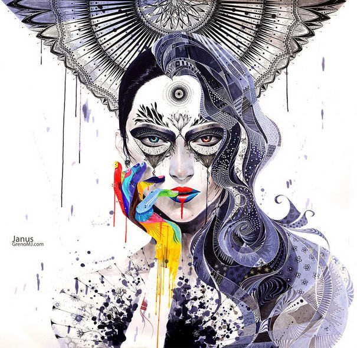

Pablo Ruiz Picasso
Pablo Ruiz Picasso was a Spanish painter, sculptor, printmaker, ceramicist, stage designer, poet and playwright who spent most of his adult life in France. Regarded as one of the most influential artists of the 20th century, he is known for co-founding the Cubist movement, the invention of constructed sculpture,[3][4] the co-invention of collage, and for the wide variety of styles that he helped develop and explore. Among his most famous works are the proto-Cubist Les Demoiselles d'Avignon (1907), and Guernica (1937), a dramatic portrayal of the bombing of Guernica by the German and Italian airforces during the Spanish Civil War. Picasso demonstrated extraordinary artistic talent in his early years, painting in a naturalistic manner through his childhood and adolescence. During the first decade of the 20th century, his style changed as he experimented with different theories, techniques, and ideas.

Minjae Lee
“Minjae Lee is a young South Korean artist whose work expresses a semi-disturbing inner tension that is tough to ignore, even if you feel that you’d like to. It draws you in with its powerful colors, halting imagery and clever juxtaposition of beauty, innocence and fragility with brash, loud and aggressive.The ethereal females that populate most of his work exude a dark, organic tension, and it seems that even the brightest marker colors do not quite manage to save them from some sort of looming peril.
Renato Bertelli
Renato Bertelli was an Italian Futurist artist. His most, and perhaps only, noted work is the 1933 ceramic bust of Benito Mussolini in the aeroceramica style, Profilo continuo del Duce (also cited as Profilo contino del Duce). The title is sometimes given as "Head of Mussolini"[1] but is better known as "Head of Mussolini (Continuous Profile)",[2] "Continuous profile of Mussolini",[3] or "Continuous Profile – Head of Mussolini". Ruscha achieved recognition for paintings incorporating words and phrases and for his many photographic books, all influenced by the deadpan irreverence of the Pop Art movement.